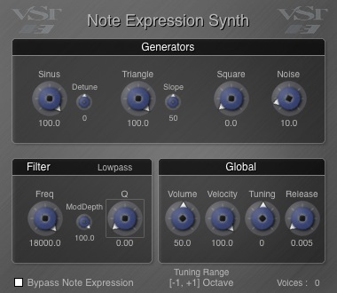

VST 3 Examples
The SDK includes some Plug-ins examples: the Legendaries AGain and ADelay Plug-in ADelay, thanks Paul Kellet the OpenSource mda Plug-ins, a basic Note Expression Synth Plug-in supporting "Note Expression Event" and an example of pitchnames support Plug-in (PitchNames Plug-in):
Very simple delay Plug-in:
- only one parameter (a delay)
Check the folder public.sdk/samples/vst/adelay of the SDK!
Classes:
The SDK includes a AGain Plug-in which is a very simple VST 3 Plug-in. This Plug-in:
- is multichannel compatible,
- supports bypass processing,
- has an automated gain parameter,
- has an Event input bus (allowing to use noteOn velocity to control the gain factor),
- has a VU peak meter,
- uses the VSTGUI library
- a version of this Plug-in with side-chaining is available (showing a Plug-in using the same controller and different components)
Check the folder public.sdk/samples/vst/again of the SDK!
Classes:
- Effects (stereo to stereo Plug-ins):
- Ambience : Reverb
- Bandisto : Multi-band Distortion
- BeatBox : Drum Replacer
- Combo : Amp and Speaker Simulator
- DeEsser : High frequency Dynamics Processor
- Degrade : Sample quality reduction
- Delay : Simple stereo delay with feedback tone control
- Detune : Simple up/down pitch shifting thickener
- Dither : Range of dither types including noise shaping
- DubDelay : Delay with feedback saturation and time/pitch modulation
- Dynamics : Compressor / Limiter / Gate
- Image : Stereo image adjustment and M-S matrix
- Leslie : Rotary speaker simulator
- Limiter : Opto-electronic style limiter
- Loudness : Equal loudness contours for bass EQ and mix correction
- MultiBand : Multi-band compressor with M-S processing modes
- Overdrive : Soft distortion
- RePsycho! : Drum loop pitch changer
- RezFilter : Resonant filter with LFO and envelope follower
- RingMod : Simple Ring Modulator
- Round Panner: 3D panner
- Shepard : Continuously rising/falling tone generator
- SpecMeter : Stereo 13 Bands spectral Meter
- Splitter : Frequency / level crossover for setting up dynamic processing
- Stereo Simulator: Haas delay and comb filtering
- Sub-Bass Synthesizer: Several low frequency enhancement methods
- TalkBox : High resolution vocoder
- TestTone : Signal generator with pink and white noise, impulses and sweeps
- Thru-Zero Flanger : Classic tape-flanging simulation
- Tracker : Pitch tracking oscillator, or pitch tracking EQ
- Instruments (1 Event input, 1 stereo Audio output):
- DX10 : Sounds similar to the later Yamaha DX synths including the heavy bass but with a warmer, cleaner tone.
- EPiano : Simple EPiano
- JX10 : The Plug-in is designed for high quality (lower aliasing than most soft synths) and low processor usage
- Piano : Not designed to be the best sounding piano in the world, but boasts extremely low CPU and memory usage.
Based on the OpenSource mda Plug-ins (http://mda.smartelectronix.com/), this set of Plug-ins demonstrates how wrap DSP code in a VST 3 Plug-in.
Check the folder public.sdk/samples/vst/mda-vst3 of the SDK!
Classes:
- Instrument Plug-in supporting note expression events
- It shows how easy it is to use vstgui4

Check the folder public.sdk/samples/vst/note_expression_synth of the SDK!
Classes:
- Instrument Plug-in showing PitchNames support
- It shows how easy it is to use vstgui4
Check the folder public.sdk/samples/vst/pitchnames of the SDK!
Classes:
- Instrument and Fx Plug-in checking the VST 3 support of a host.
Check the folder public.sdk/samples/vst/hostchecker of the SDK!
Very simple Plug-in:
Check the folder public.sdk/samples/vst/channelcontext of the SDK!
Very simple Plug-in:
Check the folder public.sdk/samples/vst/prefetchablesupport of the SDK!